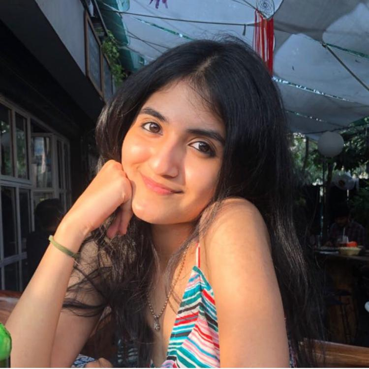

5 THINGS THAT MAKE ME HAPPY
By Eshna Zaveri
July 7, 2020
“If you shed tears when you miss the sun, you also miss the stars.”
- Rabindranath Tagore
When we only focus on negativity, we tend to miss out on the brighter side of life. This quote encourages us to reflect upon ourselves and be grateful for the little things, little things that make us smile. I couldn’t agree more and I’m thankful for this year. It taught me to hold on to what matters most, made me look back at all things I took for granted and it made me grow as an individual for the better. 2020 has indeed been the most unpredictable year of our lives, however, it is going to be the most memorable one too. On that note, here’s 5 things that made me and make me happy during the lockdown:
- Cooking- I’m someone who never entered the kitchen, the only thing I could cook until last year was Maggie. Now, I look forward to cooking every day and have already made a variety of dishes. Clearly, tables turned. Reading new recipes, experimenting with ingredients, and troubling mom for help has been nothing but fun. I realized more than the cooking; it was seeing the smiles on the faces of my family that made me happy. Those smiles push me to keep trying and make the best food. Good food makes everyone happy.
- Family and Friends- A room full of constant joy and laughter, eating mug cakes later, cleaning the house together, giving haircuts to each other, I don’t remember the last time we played so many board games. We’ve bonded and gotten stronger than ever. Video calls and online games have kept my friends and I sane. We haven’t seen each other for the longest time, but I know it’s going to be worth it when we finally do some sleepovers.
- Sleep and comfy pjs- Fun Fact: I’ve only been repeating three pairs of pj’s since the past three months. Also, I don’t think I’d fit into my jeans anymore considering I’ve only been eating all day. After you eat so much, you get the best sleep, don’t you?
- Sunsets- The number of sunsets I’ve watched because of the lockdown is crazy. It’s been so beautiful. I feel so calm, peaceful and blessed every time I look at the sun. Suddenly, the environment around me feels fresh and alive.
- Hot showers and self care- Focusing on myself, discovering new things about myself, learning new skills, doing DIY’s and working out, it has been a small journey in itself. Long hot showers make everything better and that’s the only time I get to sing.
All in all, I truly believe that when we focus on people and things that make us happy, we’ll have so much to be grateful for. We all have our bad days, but the good days and memories always overpower them, and we should always remember that.
About Eshna
I am currently doing my majors in Digital Marketing and minors in Design. I’m always up for watching bollywood movies and dancing. Aglio olio & cakes make me the happiest.